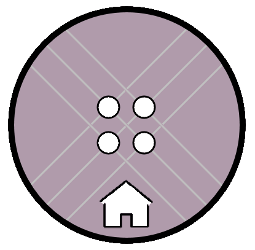

<!-- Top menu bar -->
<p-menubar [model]="items">
  <ng-template pTemplate="start">
    <div>
      <div class="centerInsideDiv" style="display: inline-block;">
        <p id="logoText">App Knap</p>
      </div>
      <div class="centerInsideDiv" style="display: inline-block;">
        
      </div>
    </div>

  </ng-template>
  <!-- <input type="text" pInputText placeholder="Search"> -->
</p-menubar>
<!-- What displays the route html files -->
<router-outlet></router-outlet>